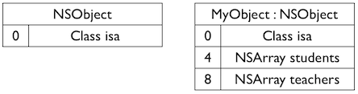
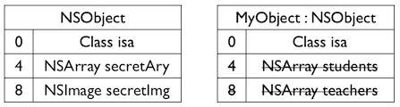
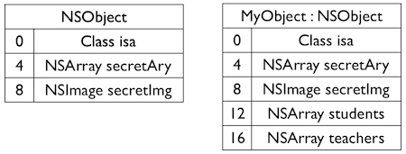

YYModel笔记<一>
YYModel加上.h一共只有5个文件，非常简洁。大概浏览一下之后，我决定从YYClassInfo这个类开始看。
YYEncodingGetType
这是一个C方法，我在Github上问了作者，这里使用C语言的原因是执行速度更快，而这个方法调用次数非常高。
方法本身比较简单，看一下注释里的两个链接Type Encodings和Declared Properties里的内容就可以理解了。
YYClassIvarInfo
看YYClassIvarInfo这个类，它包含了一个实例变量的多个信息
@interface YYClassIvarInfo : NSObject
@property (nonatomic, assign, readonly) Ivar ivar; ///< ivar opaque struct
@property (nonatomic, strong, readonly) NSString *name; ///< Ivar's name
@property (nonatomic, assign, readonly) ptrdiff_t offset; ///< Ivar's offset
@property (nonatomic, strong, readonly) NSString *typeEncoding; ///< Ivar's type encoding
@property (nonatomic, assign, readonly) YYEncodingType type; ///< Ivar's type
@end
Ivar
Ivar是表示实例变量的类型，其实际是一个指向objc_ivar结构体的指针
typedef struct objc_ivar *Ivar;
其定义如下：
typedef struct objc_ivar *Ivar;
struct objc_ivar {
char *ivar_name OBJC2_UNAVAILABLE; // 变量名
char *ivar_type OBJC2_UNAVAILABLE; // 变量类型
int ivar_offset OBJC2_UNAVAILABLE; // 基地址偏移字节
#ifdef __LP64__
int space OBJC2_UNAVAILABLE;
#endif
}
ivar_offset表示基地址偏移字节。在编译我们的类时，编译器生成了一个ivar布局，显示了在类中从哪可以访问我们的 ivars 。看下图:

上图中，左侧的数据就是地址偏移字节，我们对 ivar 的访问就可以通过对象地址 ＋ ivar偏移字节的方法。但是这又引发一个问题，看下图:

我们增加了父类的ivar，这个时候布局就出错了，我们就不得不重新编译子类来恢复兼容性。
而Objective－C Runtime中使用了Non Fragile ivars，看下图:

使用Non Fragile ivars时，Runtime会进行检测来调整类中新增的ivar的偏移量。 这样我们就可以通过对象地址 ＋ 基类大小 + ivar偏移字节的方法来计算出ivar相应的地址，并访问到相应的ivar。
ptrdiff_t
ptrdiff_t是C/C++标准库中定义的一个与机器相关的数据类型，通常用来保存两个指针减法操作的结果。offset即基地址偏移字节。
- (instancetype)initWithIvar:(Ivar)ivar；
使用属性进行初始化，其中用到的ivar_getName、ivar_getOffset、ivar_getTypeEncoding等是获取上文中objc_ivar中内容的方法。
YYClassMethodInfo
@interface YYClassMethodInfo : NSObject
@property (nonatomic, assign, readonly) Method method; ///< method opaque struct
@property (nonatomic, strong, readonly) NSString *name; ///< method name
@property (nonatomic, assign, readonly) SEL sel; ///< method's selector
@property (nonatomic, assign, readonly) IMP imp; ///< method's implementation
@property (nonatomic, strong, readonly) NSString *typeEncoding; ///< method's parameter and return types
@property (nonatomic, strong, readonly) NSString *returnTypeEncoding; ///< return value's type
@property (nullable, nonatomic, strong, readonly) NSArray<NSString *> *argumentTypeEncodings; ///< array of
@end
Method
与上文中的Ivar类似，都可以在runtime.h文件中找到定义
SEL与IMP
SEL又叫选择器，是表示一个方法的selector的指针，其定义如下：
typedef struct objc_selector *SEL;
方法的selector用于表示运行时方法的名字。Objective-C在编译时，会依据每一个方法的名字、参数序列，生成一个唯一的整型标识(Int类型的地址)，这个标识就是SEL。
IMP实际上是一个函数指针，指向方法实现的首地址。其定义如下：
id (*IMP)(id, SEL, ...)
这个函数使用当前CPU架构实现的标准的C调用约定。第一个参数是指向self的指针(如果是实例方法，则是类实例的内存地址；如果是类方法，则是指向元类的指针)，第二个参数是方法选择器(selector)，接下来是方法的实际参数列表。
前面介绍过的SEL就是为了查找方法的最终实现IMP的。由于每个方法对应唯一的SEL，因此我们可以通过SEL方便快速准确地获得它所对应的IMP，查找过程将在下面讨论。取得IMP后，我们就获得了执行这个方法代码的入口点，此时，我们就可以像调用普通的C语言函数一样来使用这个函数指针了。
更详细的解释可以找runtime相关的内容。
YYClassPropertyInfo
先看一个demo：
@interface ViewController ()
@property (nonatomic, copy) NSString *string;
@end
@implementation ViewController
- (void)viewDidLoad {
[super viewDidLoad];
//string
NSLog(@"--------string--------");
self.string = @"test!";
char *name = "string";
objc_property_t property = class_getProperty(self.class, name);
unsigned int attrCount;
objc_property_attribute_t *attr = property_copyAttributeList(property, &attrCount);
for (unsigned int i = 0; i < attrCount; i++) {
NSLog(@"name:%s,value:%s",attr[i].name,attr[i].value);
}
//number
NSLog(@"--------number--------");
self.number = 42;
name = "number";
property = class_getProperty(self.class, name);
attr = property_copyAttributeList(property, &attrCount);
for (unsigned int i = 0; i < attrCount; i++) {
NSLog(@"name:%s,value:%s",attr[i].name,attr[i].value);
}
}
@end
我定义了一个名为string的NSString属性，特质为nonatomic和copy。
运行后得到结果为：
2016-07-19 12:44:39.170 demo4[58588:11595102] --------string--------
2016-07-19 12:44:39.170 demo4[58588:11595102] name:T,value:@"NSString"
2016-07-19 12:44:39.170 demo4[58588:11595102] name:C,value:
2016-07-19 12:44:39.170 demo4[58588:11595102] name:N,value:
2016-07-19 12:44:39.171 demo4[58588:11595102] name:V,value:_string
2016-07-19 12:44:39.171 demo4[58588:11595102] --------number--------
2016-07-19 12:44:39.171 demo4[58588:11595102] name:T,value:i
2016-07-19 12:44:39.171 demo4[58588:11595102] name:N,value:
2016-07-19 12:44:39.171 demo4[58588:11595102] name:V,value:_number
然后再看- (instancetype)initWithProperty:(objc_property_t)property方法中的这一段:
for (unsigned int i = 0; i < attrCount; i++) {
switch (attrs[i].name[0]) {
case 'T': { // Type encoding
if (attrs[i].value) {
_typeEncoding = [NSString stringWithUTF8String:attrs[i].value];
type = YYEncodingGetType(attrs[i].value);
//typeEncoding长度不为0且这个属性是对象类型的
if ((type & YYEncodingTypeMask) == YYEncodingTypeObject && _typeEncoding.length) {
NSScanner *scanner = [NSScanner scannerWithString:_typeEncoding];
//判断_typeEncoding字符串是否是以 @" 开头的，如果是则继续执行，不是则跳出if
//此时扫描点为0
if (![scanner scanString:@"@\"" intoString:NULL]) continue;
NSString *clsName = nil;
//扫描_typeEncoding字符串直到遇到 "< 时停止，将这段字符串赋值到claName中，即得到 @"" 的双引号中的内容
//此时扫描点为2
if ([scanner scanUpToCharactersFromSet: [NSCharacterSet characterSetWithCharactersInString:@"\"<"]
intoString: &clsName]) {
//如果这个是对象属性则存在，不是则为nil
if (clsName.length) _cls = objc_getClass(clsName.UTF8String);
}
NSMutableArray *protocols = nil;
//扫描到 < 时停止
while ([scanner scanString:@"<" intoString:NULL]) {
NSString* protocol = nil;
//扫描到 > 时停止，将 <> 的内容赋值到protocol中
if ([scanner scanUpToString:@">" intoString: &protocol]) {
if (protocol.length) {
if (!protocols) protocols = [NSMutableArray new];
[protocols addObject:protocol];
}
}
[scanner scanString:@">" intoString:NULL];
}
//获得这个对象属性的类所遵从的协议，不是对象则为空，是对象也可能为空
_protocols = protocols;
}
}
} break;
case 'V': { // Instance variable，实例变量
if (attrs[i].value) {
//获取实例变量的名字
_ivarName = [NSString stringWithUTF8String:attrs[i].value];
}
} break;
case 'R': {
type |= YYEncodingTypePropertyReadonly;
} break;
case 'C': {
type |= YYEncodingTypePropertyCopy;
} break;
case '&': {
type |= YYEncodingTypePropertyRetain;
} break;
case 'N': {
type |= YYEncodingTypePropertyNonatomic;
} break;
case 'D': {
type |= YYEncodingTypePropertyDynamic;
} break;
case 'W': {
type |= YYEncodingTypePropertyWeak;
} break;
case 'G': {
type |= YYEncodingTypePropertyCustomGetter;
if (attrs[i].value) {
_getter = NSSelectorFromString([NSString stringWithUTF8String:attrs[i].value]);
}
} break;
case 'S': {
type |= YYEncodingTypePropertyCustomSetter;
if (attrs[i].value) {
_setter = NSSelectorFromString([NSString stringWithUTF8String:attrs[i].value]);
}
} // break; commented for code coverage in next line
default: break;
}
}
通过demo和下面初始化方法中的注释，我们可以知道T代表了这个属性的类型，V代表属性的实例变量，由此得到这个属性的相关信息。
YYClassInfo
//OC2.0上的配图
使用以下方法进行YYClassInfo的初始化：
+ (instancetype)classInfoWithClass:(Class)cls {
if (!cls) return nil;
static CFMutableDictionaryRef classCache;
static CFMutableDictionaryRef metaCache;
static dispatch_once_t onceToken;
static dispatch_semaphore_t lock;//信号量lock
dispatch_once(&onceToken, ^{
classCache = CFDictionaryCreateMutable(CFAllocatorGetDefault(), 0, &kCFTypeDictionaryKeyCallBacks, &kCFTypeDictionaryValueCallBacks);
metaCache = CFDictionaryCreateMutable(CFAllocatorGetDefault(), 0, &kCFTypeDictionaryKeyCallBacks, &kCFTypeDictionaryValueCallBacks);
lock = dispatch_semaphore_create(1);//设置信号量为1
});
dispatch_semaphore_wait(lock, DISPATCH_TIME_FOREVER);//如果信号量的值大于0，该函数所处线程就继续执行下面的语句，并且将信号量的值减1；如果信号量的值为0，那么这个函数就阻塞当前线程等待timeout
YYClassInfo *info = CFDictionaryGetValue(class_isMetaClass(cls) ? metaCache : classCache, (__bridge const void *)(cls));
if (info && info->_needUpdate) {
[info _update];
}
dispatch_semaphore_signal(lock);//当返回值为0时表示当前并没有线程等待其处理的信号量，其处理的信号量的值加1即可。当返回值不为0时，表示其当前有（一个或多个）线程等待其处理的信号量，并且该函数唤醒了一个等待的线程
//如果info不存在，初始化
if (!info) {
info = [[YYClassInfo alloc] initWithClass:cls];
if (info) {
dispatch_semaphore_wait(lock, DISPATCH_TIME_FOREVER);
CFDictionarySetValue(info.isMeta ? metaCache : classCache, (__bridge const void *)(cls), (__bridge const void *)(info));
dispatch_semaphore_signal(lock);
}
}
return info;
}
这里可以看到dispatch_semaphore_wait和dispatch_semaphore_signal是成对出现的，确保程序的同步执行。信号量的知识可以查看操作系统中信号量相关的内容。
在这里通过_update方法获取这个类中的方法列表，属性列表和实例变量列表信息。
- (void)_update {
_ivarInfos = nil;
_methodInfos = nil;
_propertyInfos = nil;
Class cls = self.cls;
unsigned int methodCount = 0;
//获取类的实例方法列表，不包括其superclasses实现的方法
Method *methods = class_copyMethodList(cls, &methodCount);
if (methods) {
NSMutableDictionary *methodInfos = [NSMutableDictionary new];
_methodInfos = methodInfos;
for (unsigned int i = 0; i < methodCount; i++) {
YYClassMethodInfo *info = [[YYClassMethodInfo alloc] initWithMethod:methods[i]];
//以method的name为键存储method信息
if (info.name) methodInfos[info.name] = info;
}
free(methods);
}
unsigned int propertyCount = 0;
//获取类的PropertyList
objc_property_t *properties = class_copyPropertyList(cls, &propertyCount);
if (properties) {
NSMutableDictionary *propertyInfos = [NSMutableDictionary new];
_propertyInfos = propertyInfos;
for (unsigned int i = 0; i < propertyCount; i++) {
YYClassPropertyInfo *info = [[YYClassPropertyInfo alloc] initWithProperty:properties[i]];
//以property的name为键存储property信息
if (info.name) propertyInfos[info.name] = info;
}
free(properties);
}
unsigned int ivarCount = 0;
//获取类的实例变量列表
Ivar *ivars = class_copyIvarList(cls, &ivarCount);
if (ivars) {
NSMutableDictionary *ivarInfos = [NSMutableDictionary new];
_ivarInfos = ivarInfos;
for (unsigned int i = 0; i < ivarCount; i++) {
YYClassIvarInfo *info = [[YYClassIvarInfo alloc] initWithIvar:ivars[i]];
//以实例变量的name为键存储信息
if (info.name) ivarInfos[info.name] = info;
}
free(ivars);
}
if (!_ivarInfos) _ivarInfos = @{};
if (!_methodInfos) _methodInfos = @{};
if (!_propertyInfos) _propertyInfos = @{};
_needUpdate = NO;
}
总结
YYClassInfo类的主要功能是由类获取类的信息，实例变量列表，属性列表，方法列表等。从这个类中可以看到实例变量的组成，实例变量，get方法，set方法，属性特质等构成属性，实例变量列表，属性列表，方法列表等又组合成一个类，从底层看到了一个类的基本组成。其中的运算涉及到了很多runtime的内容，很多平时写业务代码不会涉及到的方法，但是这些方法和相关的内容对于理解类、属性、实例变量、方法等都很有帮助。
到目前，只是知道了如何从一个类获取其中包含的信息，对于Model与JSON的转化还没有涉及到，接下来的内容主要就是对NSObject+YYModel的理解分析类。